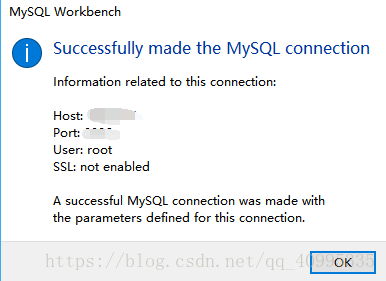
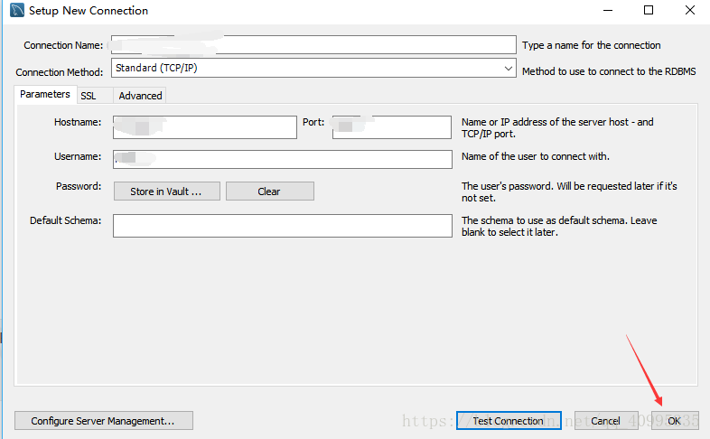

MySQL使用说明
登陆MySQL
命令行方式
mysql -h 10.40.13.202 -P 3306 -u 用户名 -p
# 然后会有提示输入密码
# Enter password: 这里输入密码不会显示但是确实是输进去的，按回车结束
# 经过一堆欢迎界面的废话之后会显示下面这一行就代表登陆成功了
# mysql>
MySQL Workbench
- 首先打开MySQL workbench 在首页点击 MySQL Connections 边上的
+号

- 在弹出的框中填入相应信息

- 以上的 default schema表示，如果想要只默认连接某一个特定的数据库，则填上数据库的名称。然后点击测试连接，若显示

- 则表示测试连接成功，注意点击Test Connection 旁边的ok才会保存连接

- 接下来回到MySQL Workbench 的首页，会发现已经有了新的连接
管理员批量创建用户脚本
-- 这个脚本能批量创建用户，用户名为st+学号，对应一个学生自己的同名数据库有所有权限，对于其他数据库有只读权限
use mysql;
set global validate_password_policy=0;
set global validate_password_length=1;
drop table if exists stu_list;
create table stu_list(
id char(7) PRIMARY KEY,
pwd varchar(20)
);
-- 这里输入('学号', '密码') 可以学生自己修改，但至少要有一个字符
insert into stu_list values
('1810063', 'alex'),
('1810064', 'bobb');
-- 批量的存储过程
drop procedure if exists create_stu;
delimiter ;;
create DEFINER=`root`@`localhost` procedure create_stu()
begin
declare ids char(7);
declare pwds varchar(20);
declare done int default false;
declare cur cursor for select `id` from `stu_list`;
declare continue handler for NOT FOUND set done = true;
open cur; -- 开始游标
LOOP_LABLE:loop -- 循环
FETCH cur INTO ids;
select pwd into pwds from stu_list where id=ids;
set @name = CONCAT('st', ids);
set @create_db_sql = concat('create database if not exists ', @name, ';');
PREPARE stmt FROM @create_db_sql;
EXECUTE stmt;
SET @user_sql = CONCAT('GRANT ALL PRIVILEGES ON ', @name,".* TO '", @name, "'@'%' IDENTIFIED BY '", pwds, "';");
PREPARE stmt FROM @user_sql;
EXECUTE stmt;
SET @user_sql = CONCAT('GRANT SELECT ON ', "*.* TO '", @name, "'@'%';");
PREPARE stmt FROM @user_sql;
EXECUTE stmt;
FLUSH PRIVILEGES;
if done THEN
LEAVE LOOP_LABLE;
END IF;
end LOOP;
CLOSE cur;
FLUSH PRIVILEGES;
end;
;;
delimiter ;
-- 调用
CALL create_stu();
drop database if exists st1810063;
drop database if exists st1810064;
drop user if exists st1810063;
drop user if exists st1810064;
drop table stu_list;